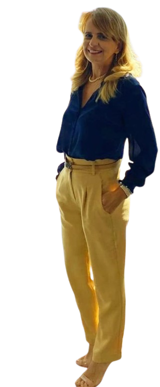

Carnaval de Olinda
Carnaval de Olinda
 Ciranda na Lua Cheia
Ciranda na Lua Cheia
 O Beijo Sertanejo
O Beijo Sertanejo
 O Sertanejo
O Sertanejo
 São Francisco Sertanejo
São Francisco Sertanejo
 Veredas
Veredas
BIOGRAFIA
WELIKA WELKOVIC: UMA FORÇA PLURAL QUE TRANSITA ENTRE AS LEIS, AS NOTAS E AS CORES DA IDENTIDADE BRASILEIRA

Nascida no Brasil em 1970, filha de pai austríaco, Welika Welkovic carrega em sua essência o amálgama entre o rigor intelectual e a efervescência criativa tropical. Com uma trajetória no serviço público federal, Welika consolidou sua carreira no universo jurídico. É formada em Direito, com especializações em Direito Constitucional, Auditoria e Contabilidade, e atua como servidora pública desde 1990.
Longe de se limitar aos códigos e processos, ela encontrou na arte o canal definitivo para expressar a imensidão de sua sensibilidade. Welkovic é uma artista multifacetada. No campo musical, revela sua versatilidade como multi-instrumentista. Nas artes visuais, destaca-se como pintora e domina as técnicas de tinta a óleo e acrílica.
Por meio dos pincéis, ela dá vida a narrativas profundas, unindo o lirismo literário à crueza telúrica das paisagens e personagens nacionais, como evidenciado em suas séries dedicadas à cultura brasileira. Após exposições realizadas no Brasil, Welika Welkovic prepara-se para um novo capítulo em sua jornada artística, continuando a expor seus quadros pela Europa e promovendo um valioso intercâmbio cultural.
Ao cruzar o oceano de volta às raízes de sua ascendência paterna, Welika assume o papel de embaixadora visual, divulgando a riqueza, a força e a expressão da arte do Brasil em outros países.
BIOGRAPHY
WELIKA WELKOVIC: A PLURAL FORCE MOVING BETWEEN THE LAWS, NOTES, AND COLORS OF BRAZILIAN IDENTITY
Born in Brazil in 1970 to an Austrian father, Welika Welkovic carries within her the blend of intellectual rigor and tropical creative energy. With a career in the Brazilian federal public service, Welika established herself in the legal field. She holds degrees and specializations in Constitutional Law, Auditing, and Accounting, and has worked as a public servant since 1990.
Far from limiting herself to codes and legal proceedings, she found in art the definitive channel for expressing the immensity of her sensitivity. Welkovic is a multifaceted artist. In music, she reveals her versatility as a multi-instrumentalist. In the visual arts, she stands out as a painter and masters oil and acrylic techniques.
Through her brushes, she brings profound narratives to life, joining literary lyricism with the earthy rawness of Brazil's landscapes and characters, as seen in her series dedicated to Brazilian culture. After exhibiting in Brazil, Welika Welkovic is preparing for a new chapter in her artistic journey, continuing to exhibit her paintings throughout Europe and fostering a valuable cultural exchange.
Crossing the ocean back toward the roots of her paternal ancestry, Welika takes on the role of a visual ambassador, sharing the richness, strength, and expression of Brazilian art with other countries.
BIOGRAFIE
WELIKA WELKOVIC: EINE VIELFÄLTIGE KRAFT ZWISCHEN GESETZEN, NOTEN UND DEN FARBEN BRASILIANISCHER IDENTITÄT
Welika Welkovic wurde 1970 in Brasilien als Tochter eines österreichischen Vaters geboren und trägt die Verbindung aus intellektueller Strenge und tropischer schöpferischer Energie in sich. Nach einer Laufbahn im brasilianischen Bundesdienst entwickelte Welika ihre Karriere im juristischen Bereich. Sie ist ausgebildete Juristin und hat sich auf Verfassungsrecht, Wirtschaftsprüfung und Rechnungswesen spezialisiert. Seit 1990 arbeitet sie im öffentlichen Dienst.
Weit davon entfernt, sich auf Gesetze und Verfahren zu beschränken, fand sie in der Kunst den entscheidenden Ausdruckskanal für die Weite ihrer Sensibilität. Welkovic ist eine vielseitige Künstlerin. In der Musik zeigt sie ihre Vielseitigkeit als Multiinstrumentalistin. In der bildenden Kunst zeichnet sie sich als Malerin aus und beherrscht die Techniken der Öl- und Acrylmalerei.
Mit ihren Pinseln erweckt sie tiefgründige Erzählungen zum Leben und verbindet literarische Lyrik mit der erdverbundenen Rohheit brasilianischer Landschaften und Figuren, wie ihre Serien zur brasilianischen Kultur zeigen. Nach Ausstellungen in Brasilien bereitet sich Welika Welkovic auf ein neues Kapitel ihrer künstlerischen Laufbahn vor: Sie wird ihre Bilder weiterhin in Europa ausstellen und einen wertvollen kulturellen Austausch fördern.
Auf ihrer Rückkehr über den Ozean zu den Wurzeln ihrer väterlichen Herkunft übernimmt Welika die Rolle einer visuellen Botschafterin. Sie vermittelt den Reichtum, die Kraft und den Ausdruck brasilianischer Kunst in anderen Ländern.